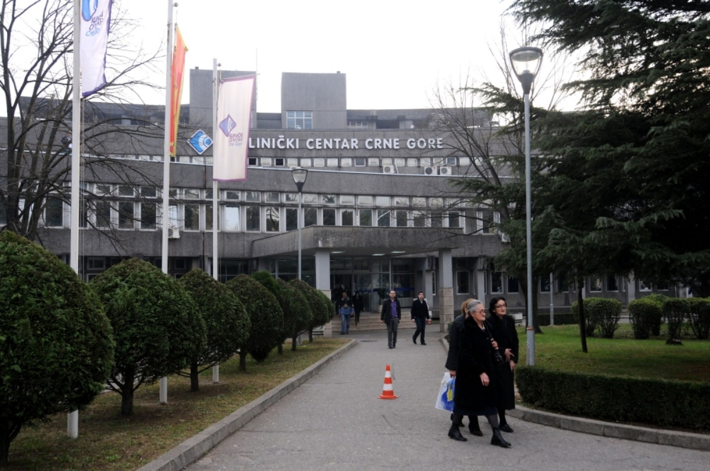
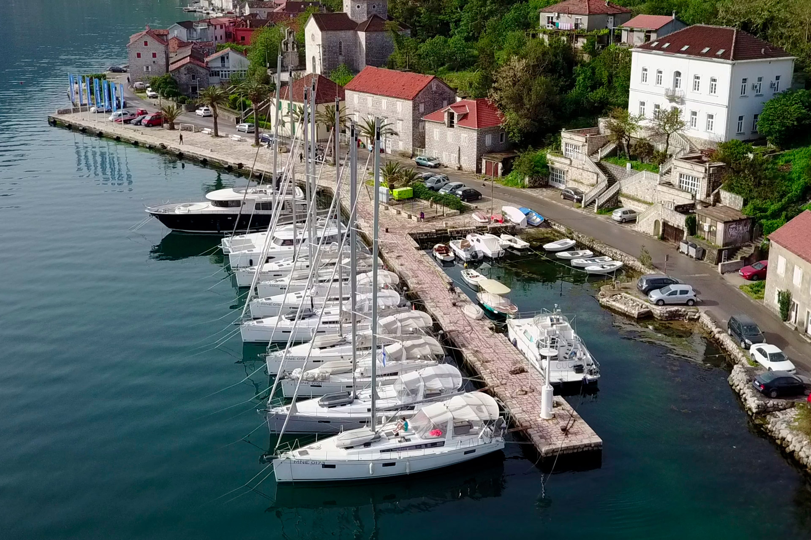
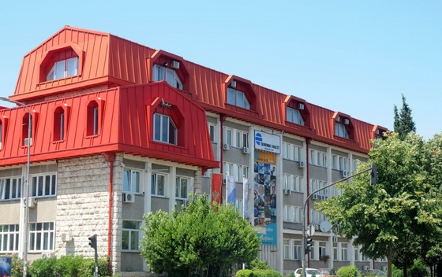
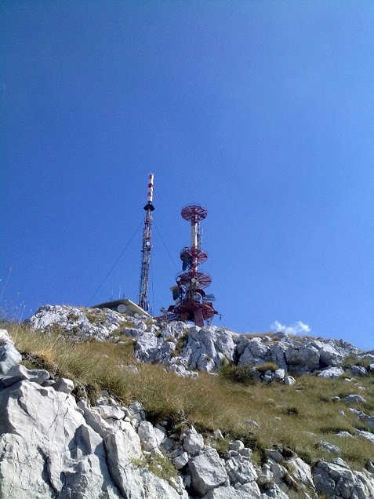
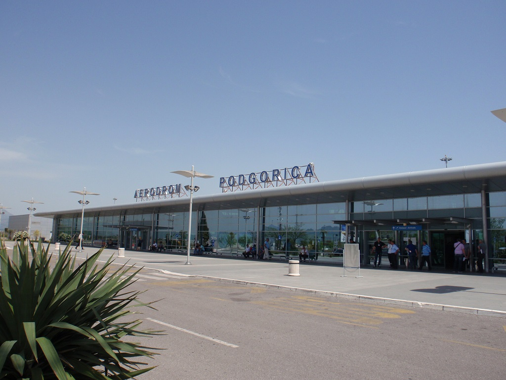
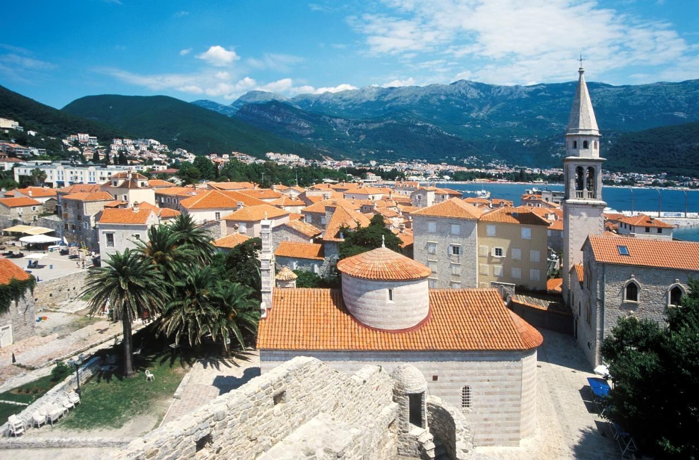

Implementacija TETRA digitalnih radio sistema i obezbjeđivanje sigurne bežične povezanosti za institucije, građane i posjetioce na teritoriji cijele države.
Saznaj višeIzgrađena za pouzdanost, bezbjednost i kontinuitet rada.
Kontinuirana bežična pokrivenost osmišljena da podrži ključne komunikacione servise u urbanim i udaljenim područjima.
Infrastruktura projektovana za visoku dostupnost i pouzdanost u profesionalnim, hitnim i operativnim okruženjima.
Podrška komunikacionim potrebama javnih institucija uz omogućavanje javnih bežičnih usluga.
Wireless Montenegro obezbjeđuje besplatan bežični internet u većim opštinama i na ključnim javnim lokacijama, uključujući aerodrome, univerzitete, gradske centre i popularne turističke destinacije. Takođe pružamo podršku tokom posebnih događaja, omogućavajući posjetiocima da ostanu povezani.
Pouzdana povezanost širom Crne Gore za institucije, kompanije i građane.

Bolnice, državni organi i opštinske službe oslanjaju se na našu mrežu za sigurnu i stabilnu komunikaciju.

Posjetioci koriste besplatan WiFi u marinama, na aerodromima i na najposjećenijim turističkim lokacijama širom Crne Gore.

Univerziteti i škole koriste našu pouzdanu mrežu kako bi omogućili stabilnu povezanost studentima i zaposlenima.

Obezbjeđujemo stabilnu pokrivenost u udaljenim i planinskim krajevima, uključujući područja poput Lovćena.

Osiguravamo pouzdanu povezanost na aerodromima i u tranzitnim čvorištima, kako za zaposlene tako i za putnike.

Podržavamo organizaciju događaja i omogućavamo besplatan javni WiFi u gradskim centrima, poput Bara i Budve.